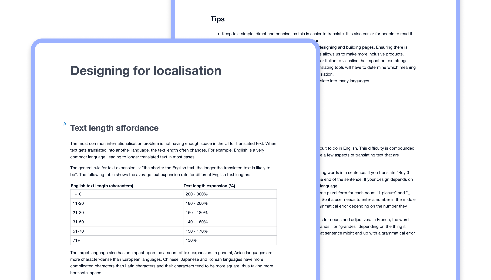

Home
XUI design system
Xero’s product design system consisting of fundamentals, components, patterns, and guidance.
In a nutshell
XUI (Xero User Interface) as a design system helps product teams at Xero design and build interfaces quickly and consistently to help create beautiful, high-quality, cohesive experiences. XUI is made up of multiple parts:
- Fundamental elements (e.g. colors and icons)
- Functional React components
- Documented pattern and usage guidance
- Dedicated support from a specialised team
For over 5 years, I've played a critical role in growing and maintaining XUI, as well as supported teams in adopting, using, and contributing to the design system.
Fundamental elements
XUI's fundamentals define the Xero product visual language and are a foundation for building up other user interface components, patterns, and pages. The fundamentals include (but are not limited to) layout and spacing, typography, colours, and icons.
I am going to highlight 3 areas of the XUI fundamentals which I helped evolve into more mature pieces of the design system.
Redesigned size and spacing system
I helped develop and migrate XUI from a dated sizing and spacing model (increments of 5px) to a scalable and systematic model (multiples of 4px).
This work involved completely redesigning components and layout structures, and introduced a brand new method to nest components systematically within each other using multiple size variants.

Colour contrast enhancements
As part of an ongoing effort to improve the accessibility of XUI, an early project was to overhaul the entire colour system, ensuring the passing of WCAG success criteria.
This process invloved reviewing colour decisions, identifying areas of improvement, and implementing the changes into the design system.
New icons
I've designed and introduced many icons throughout my time in XUI, as well as written guidance and supported other designers in contributing their own icons into the design system.
Components
XUI provides a number of React components that help product teams create cohesive experiences at speed. Components in XUI are designed to work for a multitude of scenarios and have to be fully accessible, responsive, and localisable.
Over my time at Xero, I've had the opportunity to design many components of various complexity. I'll outline a few below.
File uploader
The file uploader component facilitates users uploading files into the product. Uploaded files are displayed in a summarised list below the upload input.
Designing this component involved a lot of desk research into existing design system solutions as well as a refinement in visual and functional treatment to solve for Xero-specific problems.
Editable table
The editable table component is a complex component used to house interactive and static data in a way that's easy for users to scan, organise, and manipulate in order to complete tasks efficiently.
Check out the detailed design process for editable table.
Empty state
The empty state component provides a consistent experience for when there’s no data to display where there should be, used to be, or will eventually be.
Empty states are a common design pattern which benefitted from a considered component to aid in surfacing more predictable experiences to users. Designing this component involved understanding what existed within Xero already and producing a considered API to solve for these use-cases.
Pattern guidance
Pattern guidance documentation supports designers and engineers in making responsible experience decisions within their products. It's used to help people choose the right components in various circumstances or to give broader context to using the design system.
I've been able to write the following pattern guidance for XUI by researching industry best practices as well other design systems' documentation to create a base narrative and have then integrated specific Xero context to ensure the content is relateable and useful for product teams.
Localisation
The localisation pattern guidance provides tips and techniques to best consider and provide a localised experience in product experiences.
Localisation is all about ensuring a product works no matter where in the world it's used, or what language it's show in. The pattern guidance covers content topics such as text length affordance, labelling, date and time, addresses, and collation, as well other topics like the use of metaphors and idioms, icons, and illustrations.
Onboarding
The onboarding pattern guidance is used to support decisions being made in products to introduce new experiences or reiterate existing ones. It's centred around 5 principles for effective onboarding:
- Provide a clear path to success
- Show benefits early and often
- Create an integrated experience
- Minimise friction and expose complexity over time
- Never stop onboarding
To help teams create unified experiences, the guidance points to specific components that can be used in various scenarios to help onboard users to products and features.
Support
The XUI team offers dedicated support to teams who need help understanding, using or implementing the design system.
Through my time at Xero I've provided a range of support; from onboarding sessions, one-on-one calls, Slack channel support, as well as options for more embedded project help. Embedded support is most common when there's a team wanting help contributing to the desgin system, often through XUI Labs.